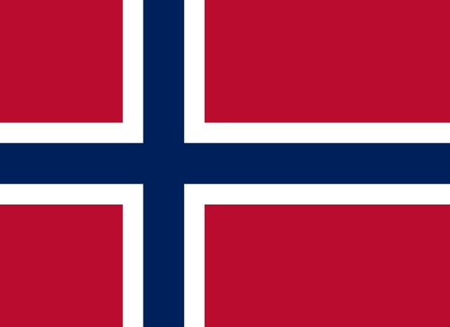
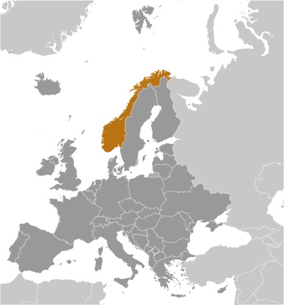

Two centuries of Viking raids into Europe tapered off after King Olav TRYGGVASON adopted Christianity in 994; conversion of the Norwegian kingdom occurred over the next several decades. In 1397, Norway was absorbed into a union with Denmark that lasted more than four centuries. In 1814, Norwegians resisted the cession of their country to Sweden and adopted a new constitution. Sweden then invaded Norway but agreed to let Norway keep its constitution in return for accepting the union under a Swedish king. Rising nationalism throughout the 19th century led to a 1905 referendum granting Norway independence. Norway remained neutral in World War I and proclaimed its neutrality at the outset of World War II, but Nazi Germany nonetheless occupied the country for five years (1940-45). In 1949, Norway abandoned neutrality and became a member of NATO. Discovery of oil and gas in adjacent waters in the late 1960s boosted Norway's economic fortunes. In referenda held in 1972 and 1994, Norway rejected joining the EU. Key domestic issues include immigration and integration of ethnic minorities, maintaining the country's extensive social safety net with an aging population, and preserving economic competitiveness.
 